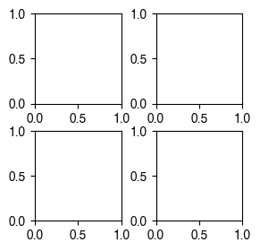
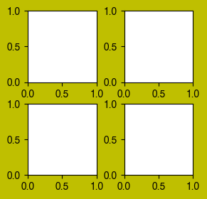

"""
1.1 plt.subplots
fig,ax = plt.subplots(nrows, ncols, figsize=(width, height), dpi, sharex=False, sharey=False, **kwargs)
Parameters:
------------------------------
- fig: figure
- ax: axes or array of Axes.
- dpi: the resolution of figure.
- nrows/ncols: number of rows/columns of the subplot grid.
- sharex/sharey: bool, default: False.
Controls sharing of properties among x (sharex) or y (sharey) axes:
- figsize: the size of the created figure (Width, height) in inches (float, float).
- **kwargs: other parameters such as squeeze, width_ratios, height_ratios, subplot_kw,
gridspec_kw, etc. that are passed to the pyplot.figure call
"""
import matplotlib.pyplot as plt
# generate a single axes figure (output 1).
fig, ax = plt.subplots(1,1, figsize=(2, 2), dpi=100)
# generate a two rows and two columns axes fugure (output 2).
# ax[0] (1st row, 1st coloumn), ax[1] (1st row, 2nd coloumn) (1st row, 1st coloumn), ax[2], ax[3] represent each axes.
fig, ax = plt.subplots(2,2, figsize=(3, 3), dpi=100)
# initialize the axes.
config = {"font.family":'Helvetica'}
plt.subplots_adjust(wspace = 0.1,hspace = 0.1)
plt.rcParams.update(config)
# generate a two rows and two columns axes fugure.
# ax1 (1st row, 1st coloumn), ax2 (1st row, 2nd coloumn) (1st row, 1st coloumn), ax3, ax4 represent each axes.
fig, ([ax1,ax2],[ax3,ax4]) = plt.subplots(2,2, figsize=(3, 3), dpi=100)
# all the ases share the same x and y label (output 3).
fig.text(0.5, 0, 'x', ha='center')
fig.text(0, 0.5, 'y', va='center',rotation='vertical')
"""
1.2 plt.figure
fig = plt.figure(figsize=None, dpi=None, facecolor=None, edgecolor=None, frameon=True, **kwargs)
Parameters:
------------------------------
- fig: figure
- dpi: the resolution of figure.
- figsize: the size of the created figure (Width, height) in inches (float, float).
- dpi:the resolution of the figure in dots-per-inch.
- facecolorcolor: the background color.
- edgecolorcolor: the border color.
- frameonbool, default: True. If False, suppress drawing the figure frame.
- **kwargs: additional keyword arguments are passed to the Figure constructor.
------------------------------
Useful for iteratively figure plotting.
"""
import matplotlib.pyplot as plt
# plot a 2*2 axes figure with 100 dpi (output 1).
fig = plt.figure(figsize=(3,3), dpi=100)
config = {"font.family":'Helvetica'}
plt.subplots_adjust(wspace =0.4,hspace =0.3)
plt.rcParams.update(config)
for i in range(4):
ax = fig.add_subplot(2,2,i+1)
# plot a 2*2 axes figure with 100 dpi, yellow face and edgecolor (output 2).
fig = plt.figure(figsize=(3,3), dpi=100, facecolor="y", edgecolor="y")
config = {"font.family":'Helvetica'}
plt.subplots_adjust(wspace =0.4,hspace =0.3)
plt.rcParams.update(config)
for i in range(4):
ax = fig.add_subplot(2,2,i+1)


Left: output 1; Right: output 2.
"""
1.3 plt.figure & GridSpec
gs = gridspec.GridSpec(nrows, ncols)
A grid layout to place subplots within a figure.
Parameters:
------------------------------
- nrows/ncols: the number of rows and columns of the grid (int).
- other parameters: https://matplotlib.org/stable/api/_as_gen/matplotlib.gridspec.GridSpec.html
- detailed tutorial: https://matplotlib.org/3.5.0/tutorials/intermediate/gridspec.html
------------------------------
Useful for plotting irregular axes.
Useful for iteratively figure plotting.
"""
import matplotlib.pyplot as plt
from matplotlib import gridspec
# plot a 1*4 axes figure with 100 dpi using GridSpec
fig = plt.figure(figsize=(8,2), dpi=100)
gs = gridspec.GridSpec(2, 8)
config = {"font.family":'Helvetica'}
plt.subplots_adjust(wspace =0.7,hspace =0.1)
plt.rcParams.update(config)
# can also use interative loop to generate axes.
ax1 = plt.subplot(gs[0:2, 0:2])
ax2 = plt.subplot(gs[0:2, 2:4])
ax3 = plt.subplot(gs[0:2, 4:6])
ax4 = plt.subplot(gs[0:2, 6:8])